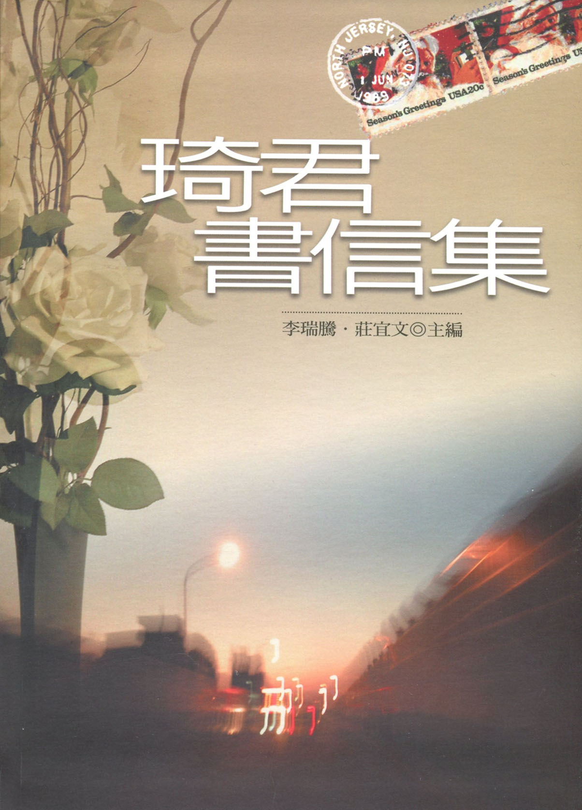

研究中心出版品
| 《琦君書信集》 | ||
|---|---|---|
|
 李瑞騰、莊宜文主編 中央大學琦君研究中心 國立台灣文學館，2007年出版 簡介：琦君的性情溫柔敦厚，筆調質樸溫馨，是台灣1950年代以降重要的女性作家。寫作態度一向嚴謹的琦君，對於寫信也毫不敷衍。在與夏志清、林海音、蔡文甫、隱地等重要文壇作家和出版者，以及多位學生和忠實讀者的對話中，琦君自然地流露了她的文學觀、信仰以及人生哲理。展讀琦君的書信，得以近距離探視琦君最為生活化、人性化的一面：所以，《琦君書信集》無疑是研究琦君文學的重要參考資料。目次：序 / 李瑞騰 1【輯一】 i 序 / 鄭邦鎮 ii 導言 / 李瑞騰 iii 編輯體例 iv 琦君小傳 致丁中德（1封） / 1 致尹雪曼（4封） / 3 致尤今（11封） / 7 致王盛弘（11封） / 29 致田新彬（5封） / 39 致艾雯（2封） / 44 致吳汴（1封） / 48 致吳孟樵（10封） / 49 致吳玲瑤（3封） / 61 致周晏子（2封） / 66 致周愚（1封） / 69 致宗鷹（2封） / 72 致林秀蘭（9封） / 75 致林芝（1封） / 85 致林海音（2封） / 87 致邱珮萱（1封） / 91 致姜筑（2封） / 93 致姚宜瑛（7封） / 97 致姚嘉為（6封） / 103 致封德屏（5封） / 109 致夏志清（12封） / 115 致夏祖美（2封） / 128 致夏祖麗（1封） / 131 致孫小英（9封） / 134 致孫維民（1封） / 144 致馬大任（1封） / 146 致莊宜文（1封） / 148 致張鳳（2封） / 150 致畢璞（2封） / 153 致陳素芳（46封） / 156 致陳麗卿（1封） / 219 致陸達誠（1封） / 222 致黃文範（2封） / 225 致黃安瓊（16封） / 228 致黃彗倩（1封） / 257 致黃淑珍（1封） / 259 致葉步榮（11封） / 262 致楊美玲（1封） / 274 致?弦（2封） / 277 致詹悟（1封） / 281 致廖玉蕙（6封） / 285 致趙淑敏（4封） / 291 致蔚藍（2封） / 295 致蔡文甫（68封） / 298 致蔡欣桐（5封） / 390 致蔡信龍（9封） / 396 致鄧泰和（3封） / 405 致樸月（22封） / 409 致蕭白（6封） / 437 致鮑曉暉（1封） / 443 致戴潮聲（2封） / 445 致鍾麗珠（1封） / 450 致隱地（3封） / 454 致韓秀（31封） / 461 致簡宛（1封） / 508 致簡靜惠（2封） / 510 致譚煥瑛（9封） / 513 致韻琴（5封） / 522 編後記/莊宜文 序 / 鄭邦鎮 （國立台灣文學館館長）2006年6月，飲譽海內外的華文作家琦君女士病逝台北，享壽九十。消息傳出，媒體、文壇及喜愛琦君的讀者，咸表震驚與哀慟；從各種報導及追悼文章，可以感覺到，很多人讀過她的《煙愁》、《桂花雨》、《橘子紅了》等等膾炙人口的作品，他們懷念她的溫柔仁厚，被她潔淨漂亮的白話美文所感動。 國立台灣文學館籌備處職司與台灣文學有關的工作，它既是文學專業圖書館，所以必須採編、典藏台灣文學重要圖書資料；也帶有博物館的性質，故有助於加深認識台灣作家的文物，諸如手稿、信札、照片等，應選擇入館典藏；此外，它要能掌握國內外台灣文學研究資源與動態，整合並促進升級；要舉辦各類各型大小展覽，向國人推廣台灣文學等。基於職責，且肯定琦君文學已成為國人共有的資產，我們曾補助中央大學中文系琦君研究中心，在琦君生前舉辦琦君研討會，在琦君辭世之後舉辦追思會；並和該中心負責人李瑞騰教授及琦君夫婿李唐基先生商量進一步可以做的事，這一本《琦君書信集》即是其中的一個計劃。> 琦君從小為母「代書」及「讀信」，遂養成了寫信的習慣，特別是後來常接到讀者來函，她自認有回信的道義；去美之後，客居的孤獨，即使忙碌於生活和寫作，寫信和讀信都是她生活中的要務，我們因此想到了為她彙編書信集。但是談何容易？信早就寄出去，如何知道誰手上擁有琦君的信？信特具私密性，擁有信的人願意公開嗎？這計劃確有其難度，接受委託的李教授卻似乎胸有成竹，我們當然也就樂觀其成了。 「書信」常是極有價值的「史料」，它原來的訴求對象（讀者）特定而單一，寫信的當下通常沒想到會公開，想說、該說的比較不會有顧忌，相對來說比較隱密而真實，一旦公開，有時不免會揭密，有時可用來印證史實、補闕史識。
琦君是傑出的散文家，她的信當然也是很好的散文。由於本集主要是徵集而來，所收大部分是琦君赴美後所寫的信，真真切切反映出琦君的生活及感受，特別是她念茲在茲的病痛之苦，以及對台灣的繫念，應是了解琦君非常重要的文學資料。有一部分的信且是原稿，將永久典藏在本館中。 2007年8月 | ||